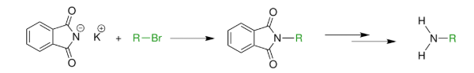
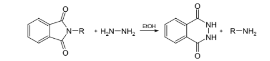
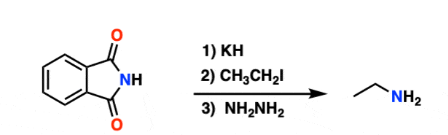
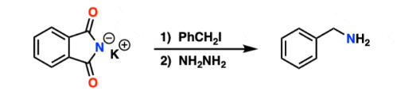
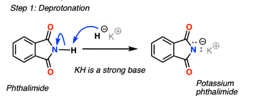
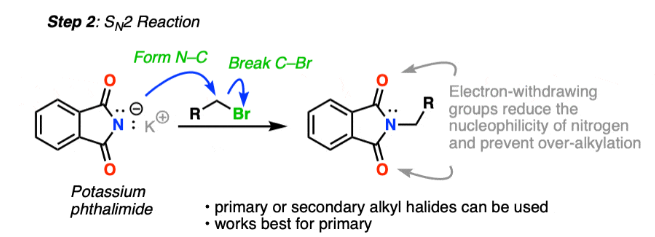
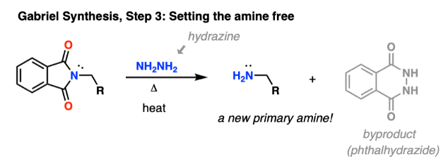

Definition
Gabriel Phthalimide Reaction is a method used for the preparation of primary amines from alkyl halides.
In this reaction, potassium phthalimide reacts with an alkyl halide to form N-alkyl phthalimide, which
on hydrolysis yields a primary amine.The reaction is named after the German chemist
Siegmund Gabriel.

The alkylation of ammonia is often an unselective and inefficient route to amines. In the Gabriel method, phthalimide anion is employed as a surrogate of H₂N⁻.
Traditional Gabriel synthesis
In this method, the sodium or potassium salt of phthalimide is N-alkylated with a primary alkyl halide to give the corresponding N-alkylphthalimide .
This step is an SN2 reaction; the Gabriel synthesis generally fails with secondary alkyl halides unless they are especially reactive.
Upon workup by acidic hydrolysis the primary amine is liberated as the amine salt.
Alternatively, the workup may be via the Ing-Manske procedure, involving reaction with hydrazine.
This method produces a precipitate of phthalhydrazide along with the primary amine.

Example
A typical example involves the reaction of potassium phthalimide with an alkyl halide (R–X).


Stepwise Reaction
1. Formation of potassium phthalimide:

2. Nucleophilic substitution with alkyl halide:

3. Hydrolysis to form primary amine:

Important Note
This reaction works best with primary alkyl halides. Secondary and tertiary halides do not give good results
due to steric hindrance and side reactions.